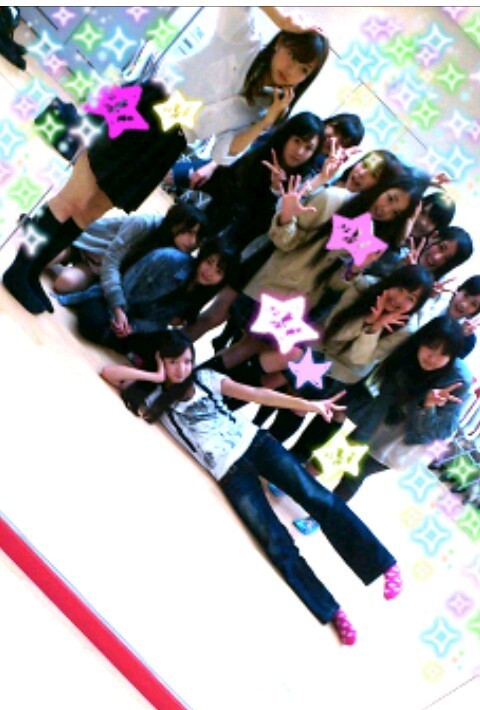
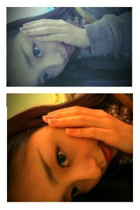

| 2012/04 28 Sat | 川村真洋 質問返しだけど明日は...> 〇< にひひひ |

学校帰りに会社で
みんなと集まった時の
写真です(*^^*)
水曜日だから
2日前ですねっ*＾ω＾*
今日は質問返しです＾＾
4/17)
★ガチ恋なメンバー教えて♪
☆恋っ゜〇゜？！
メンバーのこと好きだけど
恋には発展しまてwwん＾ω＾笑
もし自分が男だったらぁ〜...
ン〜・・。
★手紙とどいてるかなぁ？
☆あっ！最近
週ごとに集まった手紙等
プレゼントを見させて
頂いております＾ω＾
いつも楽しみにして
手紙が集まったお部屋へ
行ってるねんっ・ω・♪
★俺も質問してみよっかな？
☆たくさん
してくださぁい(⌒‐⌒)
★喉のケアどうしてる？
☆特に何もしてないですっ＾ω＾
でも、病院に行って
青い液体のうがい薬を
この前もらってきました♪
痛くなったらそれで
うがいするのです・ω・´
★眼鏡男子ってどう
思いますか？
何色眼鏡が好きですか？
☆男の人って、
普段はかけてないけど、
仕事中や、勉強等の、時だけ
メガネをかけてるのが
かっこ良かったり
すると思いますよっ*＾ω＾*
自分がかける分には
黒ぶちとか
個性的なオシャレな
メガネが欲しいです(*^^*)
★握手会で
『よくコメントしてる
○○だけど、』って
言ったら分かってくれる？
☆結構分かりるさっ♪
ぇえっとぉ...って
なった時は
握手会終わった後にいつも
コメントみて確認してるから
是非ゆってほしいなっ＾ω＾*
★何で みさみさのこと
ミサミサってかくのお？
☆片仮名で書くと
読みやすいからだっ(^o^)/
★笑顔素敵だ♪って
言われるでしょ？
☆ん〜どうだろねぇぇ∀・`
★全握何はなそーう？
☆ほんとに
何でもオウケーだよん＾＾♪
★2時間半はしるのって
普通にすごいよね？
☆なかなか走りますよねっ笑))
自分も今までそんな
走ったことないから
びっくりな気持ちだった∀・
★音楽聴いて走ったりぃ？
☆おんっ♪
音楽きいたら
あっとゆーまでもないけど
あっとゆーまよっ・ω・｀
★大阪全握、参加
するんやけど
大阪べんコテコテやけど
許してくれるぅ？
☆まひろも大阪やから
同じですねっω＾/
★大好き過ぎて
辛すぎやから
推し変しても良い？
☆ダメよっ(*^^*)
おしよきくらわせますよっ♪笑
あっ♪
明日は待ちに待った
あれぢゃんかようっ`・∀★☆★
オオサカ 個握wwww)))
ヤッフー>∀<
嬉しいなぁ〜
嬉しいなぁ〜♪！
まひろ大阪出身
なんだから*・ω・*
いひひっ＾＾笑
すっごい
楽しみにしてます〃ω〃
ぢゃあまた明日ねっ♪ノシ

by まひろ,